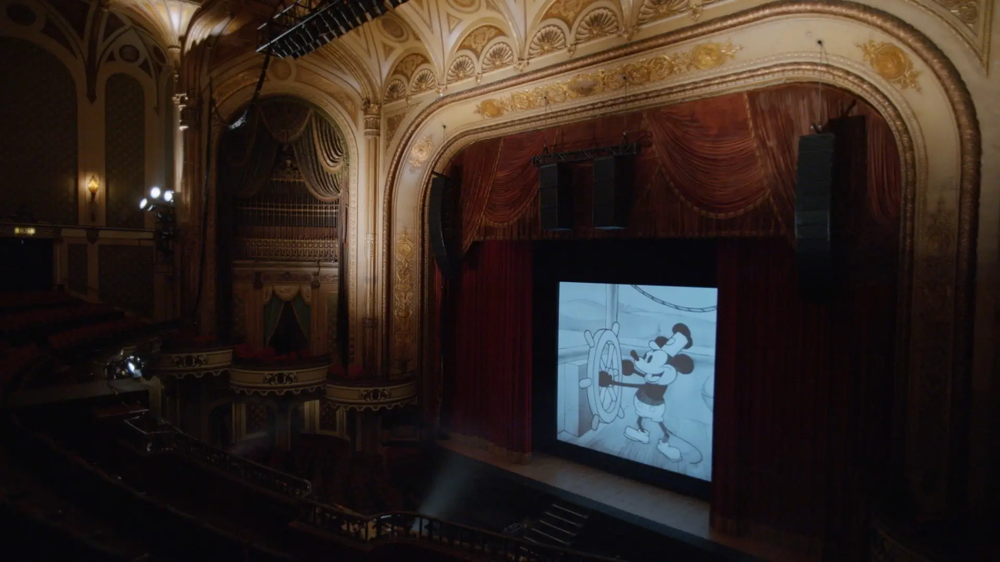

author : Kirk Wagner
published : 4th October
So what exactly is story of a mouse? Well, it's Disney's new documentary following the story and incredible history of Mickey Mouse, Disney's beloved icon and figurehead for the company, who's loved by many, kids and grown ups alike worldwide.
The documentary was directed by Jeff Malmberg, whos a critically acclaimed director, winning over 20 international awards. With the initial release of the documentary having been debuted at the South by Southwest film festival, following that it was released for the general audience around eight months later.
The documentary is quite an interesting watch if you are a fan of Mickey Mouse, it follows his conception and his evolution throught the ages, and how Mickey is an icon of joy and happiness for those who fell in love with Disney's mascot. If you are ineterested there's a really good write up about Walter Disney and his life and career, it's worth a read if you haven't done so already.
Checking out the audience scores we can see that the reviews are pretty favourable, with IMDb having a user score of 6.9/10 and Rotten Tomatoes giving it a 89% with the audience of 88%.
If you are interested the documentary, you can find it streaming on Disney Plus, though be aware that it may not be available in all countries.